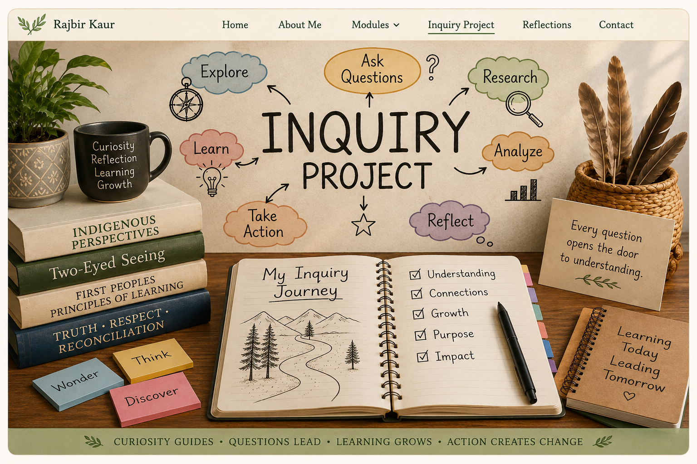

Introduction

Education plays an essential role in advancing reconciliation by helping students develop truthful understandings of Canada's history while building respectful relationships with Indigenous Peoples. The Truth and Reconciliation Commission of Canada (TRC, 2015) identifies education as a key pathway toward reconciliation, emphasizing the need for students to learn about Indigenous histories, cultures, rights, and contributions. As educators, our responsibility extends beyond teaching historical facts; we must create classrooms where Indigenous perspectives are respected as valuable ways of knowing and learning.
Before beginning this course, I believed that supporting reconciliation meant teaching about residential schools, Indigenous cultures, and important historical events during specific units or commemorative days. Although these topics remain important, I now understand that limiting Indigenous perspectives to isolated lessons can unintentionally reinforce tokenism. Authentic reconciliation requires educators to critically examine their teaching practices, build respectful relationships with Indigenous communities, and integrate Indigenous perspectives throughout everyday learning (Chrona, 2022).
This inquiry explores the question:
How can I authentically integrate Indigenous perspectives and Two-Eyed Seeing across the curriculum to support meaningful reconciliation?
Throughout this course, I explored Indigenous worldviews, colonial history, educational policies, Indigenous pedagogies, and approaches to reconciliation. These experiences challenged many of my assumptions about teaching and helped me understand that reconciliation is an ongoing responsibility rather than a single initiative. Central to this inquiry are Two-Eyed Seeing (Etuaptmumk), the First Peoples Principles of Learning, decolonization, Indigenization, land-based learning, cultural safety, Indigenous self-determination, UNDRIP, British Columbia's Declaration on the Rights of Indigenous Peoples Act (DRIPA), and the Truth and Reconciliation Commission's Calls to Action, particularly Call to Action 62 (Government of British Columbia, 2022; TRC, 2015; United Nations, 2007).
As an educator, I have also come to recognize the importance of presenting Indigenous Peoples not only through the history of colonization but also through their resilience, leadership, and ongoing contributions to Canadian society. Learning about Indigenous educators, artists, healthcare professionals, authors, and Knowledge Keepers challenged deficit-based narratives and reminded me that Indigenous knowledge continues to shape education, science, governance, and community life today (National Centre for Truth and Reconciliation [NCTR], 2019). This shift has strengthened my commitment to creating an inclusive classroom where Indigenous perspectives are embedded across the curriculum in meaningful and respectful ways.